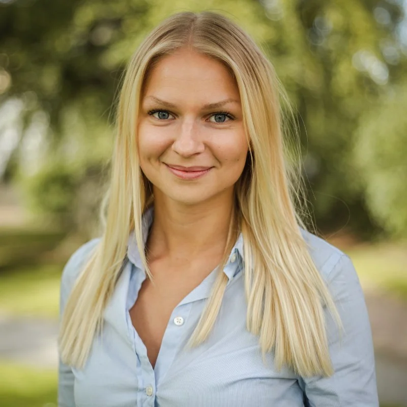
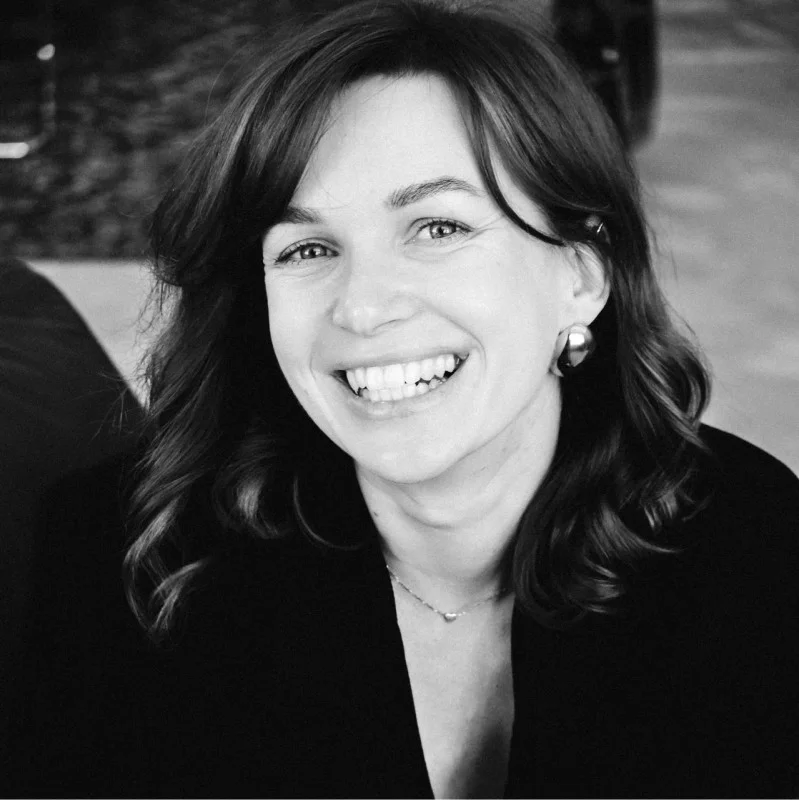
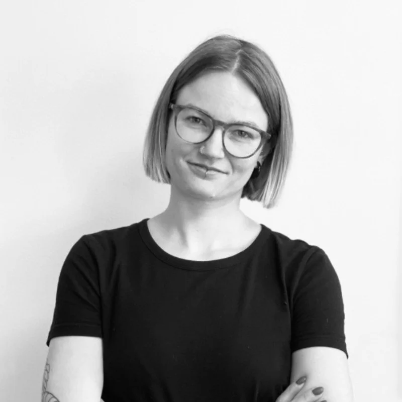
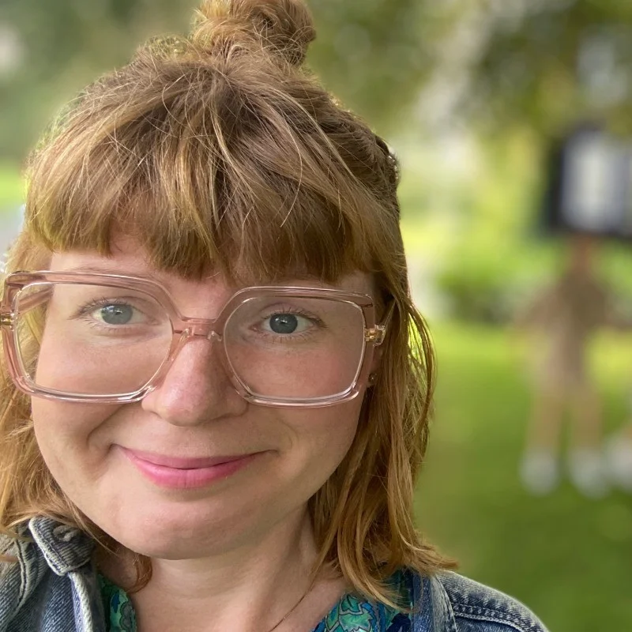

Me, as a designer & colleague
Ten years in patient care taught me to read people accurately, ask better questions than the obvious ones, and stay composed when things move fast. Moving into UX didn’t feel like a career change — it felt like the same instincts applied to a different set of problems.
While frameworks like the Double Diamond are a solid starting point, real-life processes rarely fit any method completely. My approach is rooted in flexibility, quick thinking, curiosity, and a constant openness to new ideas.
With colleagues, I try to be direct and dependable. I prefer honest conversations over comfortable ones, and I do my best work in teams where that goes both ways.
On a more personal note
My interests have always been all over the place — theatre, psychology, medicine, music. People who knew me growing up predicted either healthcare or something creative. Turns out both camps were right.
I spent my twenties as a dental nurse before stumbling into UX. Looking back, the through-line is obvious: same curiosity about people, just different tools.
When I’m not deep in research or fussing over interfaces, I enjoy family life, hanging out with my cats and bingeing on films and music. If you ever need a pub quiz partner or office party DJ — I’m your gal.

“A huge shoutout to our UI/UX rockstar Felicia who turned complex ideas into something that actually feels calm and intuitive to use.”
“She consistently took on projects with ease and minimal guidance, impressing both colleagues and clients in her delivery. Her sharp critical thinking makes her a great design & research asset.”

“I was impressed with her facilitating skills. She runs interviews very professionally, asking the right questions and focusing on what is important.”

“She is a natural people person. This not only shows in how quickly she integrated into the team but also in how easily she led user interviews from the first try.”

“With a deep understanding of others and ability to see things that others often miss, Felicia has the ability to offer valuable insights and guidance to colleagues and friends.”